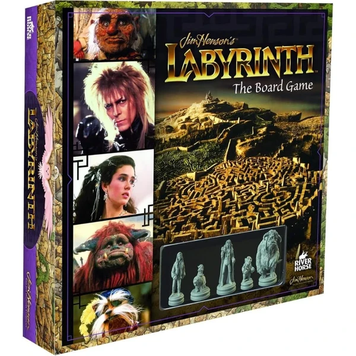
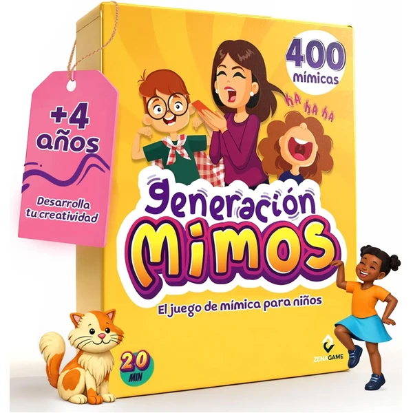
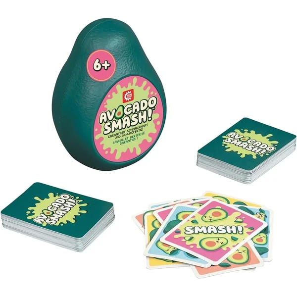
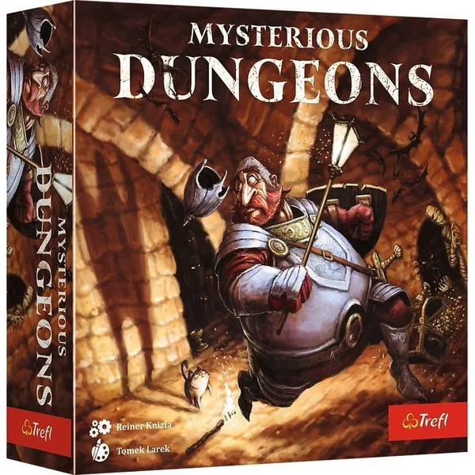
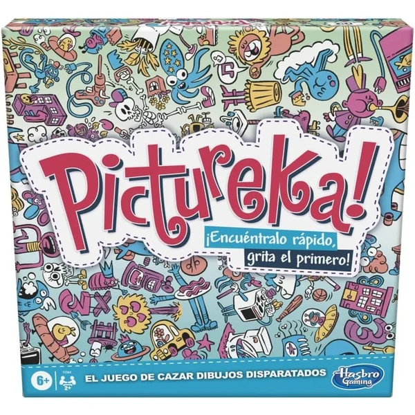
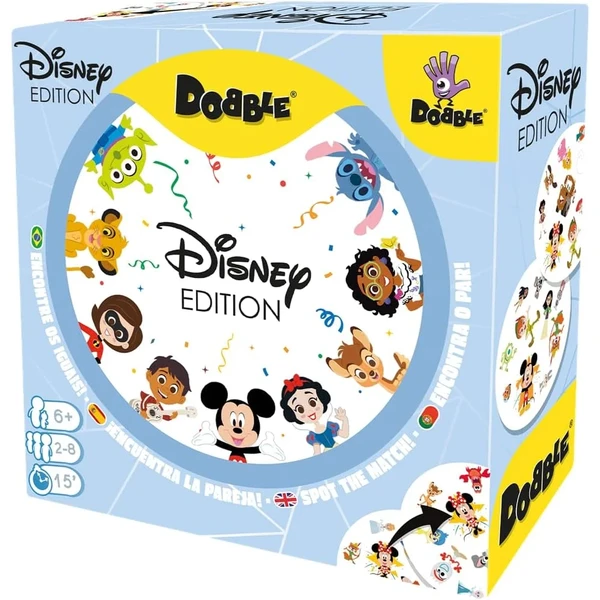
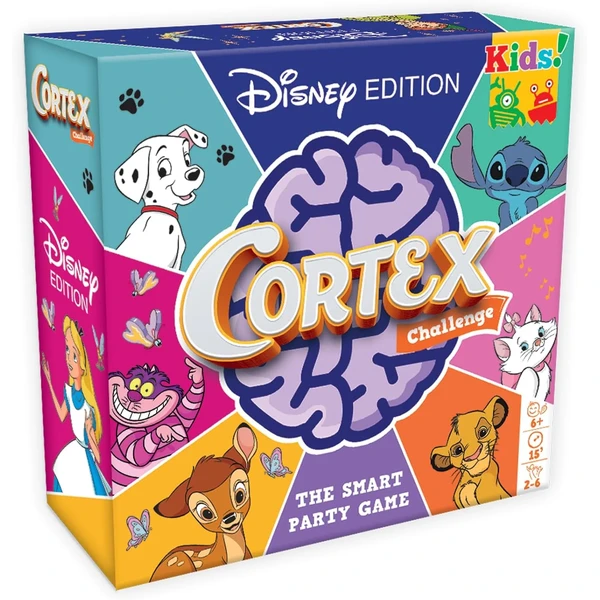

Labyrinth The Movie Board Game
Un juego de mesa basado en la película Labyrinth de Jim Henson, con 5 figuras coleccionables de los personajes principales, para hasta 5 jugadores.
⭐ ¿Por qué nos gusta?
- ✔ 5 figuras coleccionables de los personajes.
- ✔ Hasta 5 jugadores a la vez.
- ✔ Basado en un clásico del cine familiar.
💬 Lo que más destacan las familias
Muchos padres coinciden en que las figuras coleccionables son el elemento que más engancha, sobre todo entre quienes ya conocen la película. También se comenta que las partidas dan pie a compartir con los niños un clásico que los adultos recuerdan con cariño.
Ver en Amazon

Zenagame Juego de Mímica
Un juego de mímica con cartas ilustradas y tres niveles de dificultad, con retos adicionales como hacer mímica con los ojos cerrados para sumar diversión entre toda la familia.
⭐ ¿Por qué nos gusta?
- ✔ Cartas con imágenes, no requiere saber leer bien.
- ✔ 3 niveles de dificultad progresiva.
- ✔ Desafíos extra que le dan un toque divertido.
💬 Lo que más destacan las familias
Una de las cosas más comentadas es lo bien que funciona con niños que todavía no leen con soltura, gracias a las cartas ilustradas. También se valora que los retos con los ojos cerrados arranquen las risas más sonoras de la partida.
Ver en Amazon

Game Factory Avocado Smash
Un juego de cartas rápido de descarte con temática de aguacates, con reglas sencillas y partidas de unos 10 minutos. Nota: el idioma de caja e instrucciones no está garantizado en español.
⭐ ¿Por qué nos gusta?
- ✔ Reglas muy sencillas, fáciles de explicar.
- ✔ Partidas rápidas, de unos 10 minutos.
- ✔ Formato compacto, fácil de llevar de viaje.
💬 Lo que más destacan las familias
Los compradores valoran especialmente lo rápidas que son las partidas, perfectas para echar una mientras se espera o entre otras actividades. También se comenta que las reglas se explican en un momento, así que se puede jugar casi sin preparación.
Ver en Amazon

Tachan Secuency
Un juego electrónico de memoria con luces y sonidos, en el que hay que repetir secuencias cada vez más largas para poner a prueba la concentración de cada jugador.
⭐ ¿Por qué nos gusta?
- ✔ Secuencias de luces y sonidos, muy visual.
- ✔ Entrena memoria y capacidad de concentración.
- ✔ Válido para varios jugadores por turnos.
💬 Lo que más destacan las familias
Entre los comentarios más habituales aparece que las luces y sonidos hacen el juego mucho más entretenido que uno de memoria tradicional. También se valora que cada partida sea un reto distinto, porque las secuencias nunca se repiten igual.
Ver en Amazon

Trefl Misterioso Subsuelo
Un juego de estrategia en el que hay que construir pasillos con fichas y recolectar tesoros mientras se evitan las figuras oscuras, apto para 1 a 5 jugadores. Nota: el idioma de las instrucciones no está garantizado en español.
⭐ ¿Por qué nos gusta?
- ✔ Se puede jugar en solitario o hasta con 5 personas.
- ✔ Desarrolla pensamiento lógico y estrategia.
- ✔ Partidas de unos 20 minutos.
💬 Lo que más destacan las familias
Se repite bastante el comentario de que funciona igual de bien en solitario que en grupo, algo poco habitual en este tipo de juegos. También gusta que cada partida sea rápida, así que da tiempo a jugar varias rondas seguidas.
Ver en Amazon

Hasbro Pictureka!
Un juego de búsqueda visual en el que hay que encontrar objetos disparatados en 9 baldosas de doble cara siguiendo las instrucciones de cartas de misión, ganando puntos por cada descubrimiento.
⭐ ¿Por qué nos gusta?
- ✔ 9 baldosas de doble cara con dibujos disparatados.
- ✔ Juego de búsqueda visual rápido y frenético.
- ✔ Para 2 o más jugadores, ideal para toda la familia.
💬 Lo que más destacan las familias
No es raro encontrar comentarios sobre lo frenético que resulta buscar los objetos disparatados, algo que mantiene a todos atentos desde el primer minuto. También se valora que las baldosas de doble cara den variedad para no repetir siempre el mismo tablero.
Ver en Amazon

Asmodee Dobble Disney
Un juego de velocidad y observación repleto de personajes Disney. Encuentra el símbolo común entre dos cartas antes que tus rivales. Partidas rápidas de 15 minutos, perfectas para toda la familia.
⭐ ¿Por qué nos gusta?
- ✔ Juego rápido de observación y reflejos.
- ✔ Temática Disney atractiva para los niños.
- ✔ Apto para 2 a 8 jugadores simultáneamente.
💬 Lo que más destacan las familias
Un detalle que aparece una y otra vez es lo rápido que se pica la gente con este juego, porque cada ronda dura segundos y apetece jugar otra más. Los personajes Disney también ayudan a que los más pequeños se enganchen desde la primera partida.
Ver en Amazon

Asmodee Cortex Kids Disney
Un juego de retos mentales con ilustraciones Disney que pone a prueba la agilidad visual, coordinación, memoria y reflejos. Diseñado para estimular el pensamiento lógico mientras te diviertes.
⭐ ¿Por qué nos gusta?
- ✔ Múltiples tipos de desafíos mentales diferentes.
- ✔ Ilustraciones Disney de películas emblemáticas.
- ✔ Desarrolla agilidad mental y coordinación.
💬 Lo que más destacan las familias
Quienes lo han probado destacan que combina varios tipos de reto en un mismo juego, así que nunca se hace repetitivo. También se comenta que las ilustraciones Disney animan a los niños a querer jugar otra ronda más.
Ver en Amazon